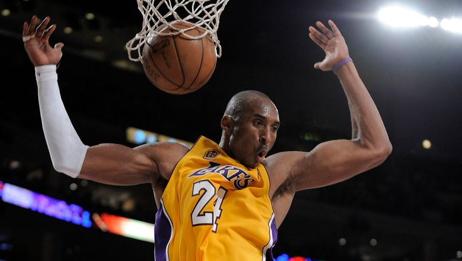

Basketbal
Basketbal is een wedstrijdsport die in 1891 door James Naismith in Springfield, Massachusetts (Verenigde Staten) werd uitgevonden.
Oorspronkelijk was het een Amerikaanse mannensport. Het huidige basketbal wordt op bijna elk continent door zowel mannen als vrouwen beoefend.
Twee teams van elk vijf aan het spel deelnemende spelers en zeven wisselspelers komen tegen elkaar uit.
Het doel van het spel is de bal te veroveren en deze door een ijzeren ring - de basket - te werpen en te verhinderen dat de tegenstander hetzelfde doet.
De basket heeft een doorsnede van 45,0 cm, hangt op een hoogte van 3,048 meter (10 feet) bevestigd aan een backboard en is voorzien van een net.
Aan elk van de korte zijden van het rechthoekig basketbalveld bevindt zich een basket.
Basketbal wordt zowel binnen als buiten (het zogenaamde streetbasketball of streetball) beoefend. Binnen is de ondergrond doorgaans van hardhout of kunststof en buiten wordt op asfalt gespeeld.
Internationale basketbalwedstrijden worden volgens de officiële regels van de FIBA gespeeld.
De NBA heeft hier echter sinds jaar en dag een grote invloed op en neemt vaak het voortouw in spelregelwijzigingen, die later door de FIBA worden overgenomen.
Het spel
In aanvallend opzicht wordt basketbal gespeeld door de bal op de grond te stuiten (stilstaand, dan wel dribbelend lopend met de bal) of door deze aan een medestander toe te spelen, te passen.
Binnen de door de schotklok toegestane tijd van 24 seconden moet een scoringspoging worden ondernomen. Dat wil zeggen dat de bal binnen een bepaalde tijd de basket moet raken.
De schotklok, die de duur van een aanval beperkt, is ingesteld om tegemoet te komen aan de snelheid en daarmee aan de aantrekkelijkheid van het basketbalspel.
In het moderne basketbal wordt, afhankelijk van de afstand van waarop wordt geschoten, met een goal twee of drie punten gescoord (de zogenaamde twee- en driepunters).
Een vrije worp levert één punt op. De verschillende veldspelers nemen verschillende strategische posities in; de center en power-forward in de nabijheid van de basket,
de small-forward en shooting-guard rond de driepuntlijn en de point-guard brengt de bal van de ene naar de andere zijde van het speelveld, om deze aan een van zijn medespelers toe te spelen.
Daarmee proberen zij hun veld zo goed mogelijk te verdedigen.
Het team dat aan het einde van een 4 × 10 minuten (FIBA) of 4 × 12 minuten (NBA) durende basketbalwedstrijd de meeste punten heeft gescoord wint.
In het geval van een gelijkspel wordt de wedstrijd in één of meer verlengingen van vijf minuten (zowel FIBA als NBA) beslist.
Het scoreverloop en andere belangrijke wedstrijdgegevens worden bijgehouden op het wedstrijdblad.
Het verdedigende team probeert het aanvallende team van scoren te weerhouden en poogt zelf de bal te bemachtigen. Een aantal strategieën wordt toegepast om de tegenstander de bal te doen verliezen.
Wanneer een aanvallend team het balbezit uit handen geeft, is er sprake van een turnover. Balverlies kan worden geleden als gevolg van een steal van een tegenstander,
wanneer een speler met de bal buiten het speelveld geraakt of een loopfout begaat, wanneer hij een aanvallende fout begaat,
als een schot door een tegenstander wordt geblokt of wanneer de bal na een mislukte doelpoging door de tegenstander via een defensieve rebound wordt bemachtigd.
Wanneer een speler de bal aan een scorende medespeler toespeelt, die daarop een doelpoging kan doen, spreekt men van een assist.
Bepaald fysiek contact, met name wanneer hier voordeel mee wordt behaald, kan worden bestraft met een persoonlijke fout; onsportief gedrag wordt bestraft met een onsportieve fout.
Commentaar op de scheidsrechters of technische staf kan een technische fout opleveren. Wanneer een speler een voor de wedstrijd bepaald aantal fouten begaat, wordt hij van het spel uitgesloten.
Bij bepaalde niet-toegestane balbehandelingen, zoals lopen met de bal of tweemaal dribbelen (double dribble of second dribble), gaat het balbezit naar de tegenstander.
Het speelveld
In basketbal heet het speelveld een basketbalveld. Het bestaat uit een rechthoekig oppervlak met aan beide korte kanten een basket.
In het professioneel basketbal, met name wanneer het binnen wordt gespeeld, is de ondergrond van hardhout, meestal van eiken.
Wanneer basketbal buiten wordt gespeeld, is er meestal sprake van een asfalt ondergrond. Basketbalvelden hebben verschillende afmetingen.
In de NBA is een veld 94 feet lang en 50 feet breed (28,65 bij 15,24 meter), een FIBA-veld is met 28×15 meter iets kleiner (vanaf 26×14 meter kan een veld ook goedgekeurd worden).
De basket hangt altijd op een hoogte van 3,05 meter (behalve in jeugdcompetities, waar de basket doorgaans op een hoogte van 2,60 meter hangt) en het middelpunt van de basket ligt op 1,575 m vanaf de achterlijn.
Het veld heeft twee zij- en achterlijnen, een middenlijn, een vrijeworplijn (op 5,80 meter van de achterlijn) en een driepuntlijn (op 6,75 m vanaf het middelpunt van de basket; tot 2010 was dat 6,25 m[1]).
Verder wordt er nog een middencirkel (waar elk spel aanvangt met een sprongbal) en een zogenaamde bucket, het gebied direct om de basket, onderscheiden.
De bucket is het gebied voor de basket, het is met lijnen aangegeven, 6 meter breed. Het is het gebied tussen de vrijeworplijn en de achterlijn.
Tot 2010 was dit een trapeziumvorm, daarna werd het een rechthoek.[1] De basket bevindt zich op 1,2 meter van de achterlijn.
De basket heeft een diameter van 0,45 meter, het backboard is 1,80 meter breed en 1,05 meter hoog.
De onderkant van het bord bevindt zich op een hoogte van 2,90 meter, de basket is op een hoogte van 3,05 meter, op bord bevestigd.
De afstand van de driepuntlijn is in de geschiedenis van het spel meermalen gewijzigd;
in NBA-wedstrijden bevindt de driepuntlijn zich verder van de basket dan bij internationale wedstrijden het geval is, namelijk 7,22 meter.